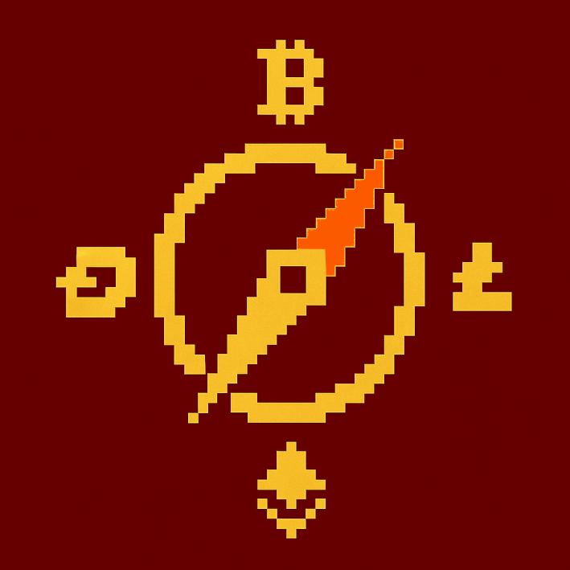
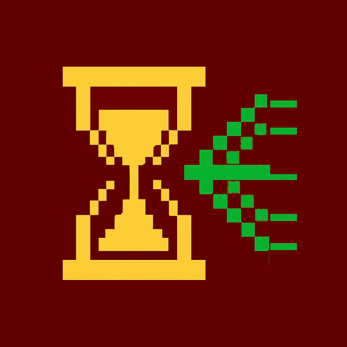

Hub de Recherche Crises
Cadre d'Analyse des Vulnérabilités du Protocole Bitcoin
Navigation Recherche
Ce cadre de recherche complet examine les vulnérabilités du protocole Bitcoin à travers plusieurs prismes analytiques. Naviguez à travers notre fondation théorique, l'analyse de gouvernance, la chronologie historique interactive et les études de cas détaillées.

Cadre Théorique
Matrice taxonomique des crises et définitions conceptuelles pour comprendre les vulnérabilités protocolaires
Gouvernance des Crises
Analyse des processus de gouvernance, des acteurs et des mécanismes de prise de décision en résolution de crise

Chronologie Interactive
Exploration chronologique des vulnérabilités Bitcoin de 2009-2019 avec analyse détaillée
Études de Cas
Examen approfondi de vulnérabilités critiques et de leurs processus de résolution